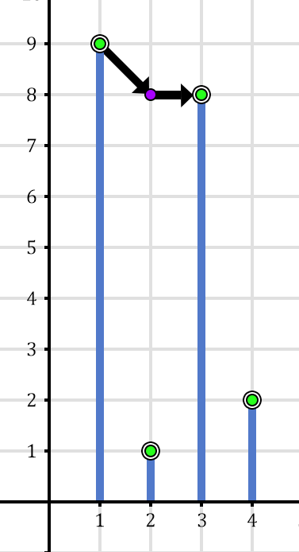
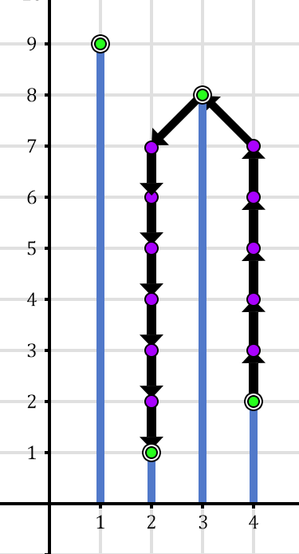

Deskripsi
Di Bukit Barisan terdapat $N$ bukit yang dinomori dari $1$ sampai $N$ dari barat ke timur.
Bukit $i$ memiliki ketinggian $H_i$.
Pak Dengklek mempunyai sebuah ransel roket yang bisa membuat ia terbang di udara.
Pak Dengklek bisa melakukan hal-hal berikut secara bersamaan menggunakan ransel roketnya.
-
Bergerak secara melintang antar bukit, yaitu melakukan salah satu dari ketiga hal berikut.
- Berpindah ke bukit yang ada di sebelah timur dari bukit sekarang. Dengan kata lain, Pak Dengklek berpindah ke bukit $i + 1$ apabila ia sedang berada di bukit $i$.
- Berpindah ke bukit yang ada di sebelah barat dari bukit sekarang. Dengan kata lain, Pak Dengklek berpindah ke bukit $i - 1$ apabila ia sedang berada di bukit $i$.
- Tidak berpindah dari bukit sekarang.
-
Mengubah ketinggiannya, yaitu melakukan salah satu dari ketiga hal berikut.
- Menaikkan ketinggiannya sebesar satu. Hal ini memerlukan bahan bakar sebesar $4$ unit.
- Menurunkan ketinggiannya sebesar satu. Hal ini memerlukan bahan bakar sebesar $1$ unit.
- Mempertahankan ketinggiannya. Hal ini memerlukan bahan bakar sebesar $2$ unit.
Tentu saja ketika berada di bukit $i$, maka ketinggian Pak Dengklek di saat itu haruslah setidaknya setinggi $H_i$.
Pak Dengklek mendapat permintaan untuk mengirimkan $Q$ buah bola menggunakan ransel roketnya.
Pada pengiriman ke-$j$, Pak Dengklek awalnya berada di puncak bukit $S_j$ dan akan mengirimkan bola ke puncak bukit $T_j$.
Tentu saja untuk setiap pengiriman, Pak Dengklek ingin meminimumkan bahan bakar yang digunakan.
Bantulah Pak Dengklek untuk menghitung bahan bakar minimum yang diperlukan untuk setiap pengiriman!
Batasan
- $2 \le N \le 200\;000$
- $1 \le H_i \le 10^9$
- $1 \le Q \le 200\;000$
- $1 \le S_j, T_j \le N$
- $S_j \neq T_j$
Subsoal
-
(7 poin) Hanya berisi kasus uji berikut:
$N = 8$, $H = [1, 9, 3, 3, 5, 4, 8, 2]$, $Q = 4$, dan pengiriman bola $(S_j, T_j)$ berturut-turut adalah $(1, 8)$, $(3, 6)$, $(6, 4)$, dan $(7, 2)$.
- (5 poin) $S_j + 1 = T_j$
- (6 poin) $H_i = i$
- (18 poin) $N, Q \le 100$, $H_i \le 100$
- (24 poin) $N, Q \le 1000$
- (13 poin) $S_j = 1$
- (27 poin) Tidak ada batasan tambahan.
Masukan
Masukan diberikan dalam format berikut:
N
H1 H2 … HN
Q
S1 T1
S2 T2
⋮
SQ TQ
Keluaran
Keluarkan $Q$ buah baris, dengan baris ke-$j$ menyatakan bahan bakar minimum yang diperlukan untuk pengiriman ke-$j$.
Contoh Masukan 1
4
9 1 8 2
2
1 3
4 2
Contoh Keluaran 1
3
31
Penjelasan Contoh 1
Untuk mengirimkan bola pertama, Pak Dengklek akan memulai perjalanannya dari puncak bukit $1$ dengan ketinggian $9$.
Pak Dengklek akan melakukan gerakan-gerakan berikut:
-
Bergerak ke timur dan menurunkan ketinggiannya sebesar satu.
Hal ini memerlukan bahan bakar sebesar $1$ dan Pak Dengklek berpindah ke bukit $2$ dengan ketinggian $8$.
-
Bergerak ke timur tanpa mengubah ketinggiannya.
Hal ini memerlukan bahan bakar sebesar $2$ dan Pak Dengklek berpindah ke bukit $3$ dengan ketinggian $8$.
Pak Dengklek mencapai puncak bukit $3$ dengan bahan bakar $1 + 2 = 3$.
Tidak ada cara lain yang menggunakan bahan bakar yang lebih sedikit.
Untuk mengirimkan bola kedua, Pak Dengklek akan memulai perjalanannya dari puncak bukit $4$ dengan ketinggian $2$.
Pak Dengklek akan melakukan gerakan-gerakan berikut:
-
Menaikkan ketinggiannya sebanyak $5$ kali tanpa mengubah posisi bukit.
Hal ini memerlukan bahan bakar sebesar $5 \times 4 = 20$ dan Pak Dengklek tetap berada di bukit $4$ dengan ketinggian $7$.
-
Bergerak ke barat dan menaikkan ketinggiannya sebesar satu.
Hal ini memerlukan bahan bakar sebesar $4$ dan Pak Dengklek berpindah ke bukit $3$ dengan ketinggian $8$.
-
Bergerak ke barat dan menurunkan ketinggiannya sebesar satu.
Hal ini memerlukan bahan bakar sebesar $1$ dan Pak Dengklek berpindah ke bukit $2$ dengan ketinggian $7$.
-
Menurunkan ketinggiannya sebanyak $6$ kali tanpa mengubah posisi bukit.
Hal ini memerlukan bahan bakar sebesar $6 \times 1 = 6$ dan Pak Dengklek sekarang berada di bukit $2$ dengan ketinggian $1$.
Pak Dengklek mencapai puncak bukit $2$ dengan bahan bakar $20 + 4 + 1 + 6 = 31$.
Tidak ada cara lain yang menggunakan bahan bakar yang lebih sedikit.
Berikut adalah ilustrasi dari pengiriman bola pertama dan bola kedua.


Contoh Masukan 2
9
1 2 3 2 1 2 3 2 1
4
1 9
4 6
2 6
5 2
Contoh Keluaran 2
18
4
9
9